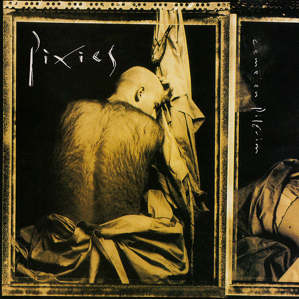
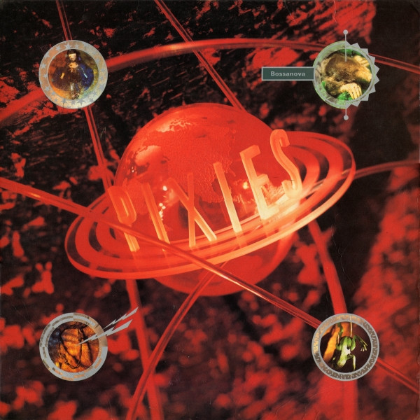
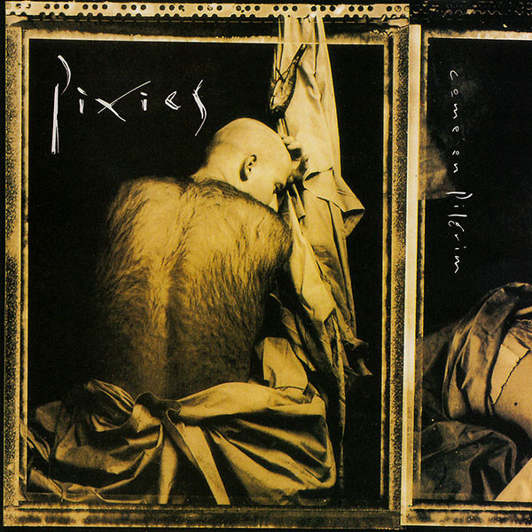
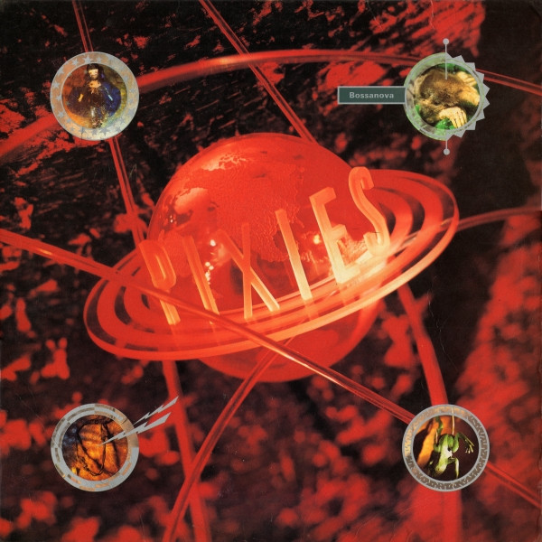

The Pixies
The Pixies are associated with the 1990s alternative rock boom, and draw on elements including
punk rock and surf rock. Their music is known for dynamic "loud-quiet-loud" shifts and song structures. Francis is the
Pixies' primary songwriter; his often surreal lyrics cover offbeat subjects. Their jarring pop
sound influenced acts such as Nirvana, Radiohead, the Smashing Pumpkins and Weezer. The Pixies' popularity
grew in the years after their breakup, leading to a 2004 reunion, sold-out world
tours and four further albums. The Pixies are my favorite band of all time
because of their soft to loud style of rock. I have been listening to them ever since middle school and they are
always in my spotify wrapped. Frank Black the lead singer has a very disticnt voice. A few of my favorite songs would be...
 


